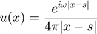
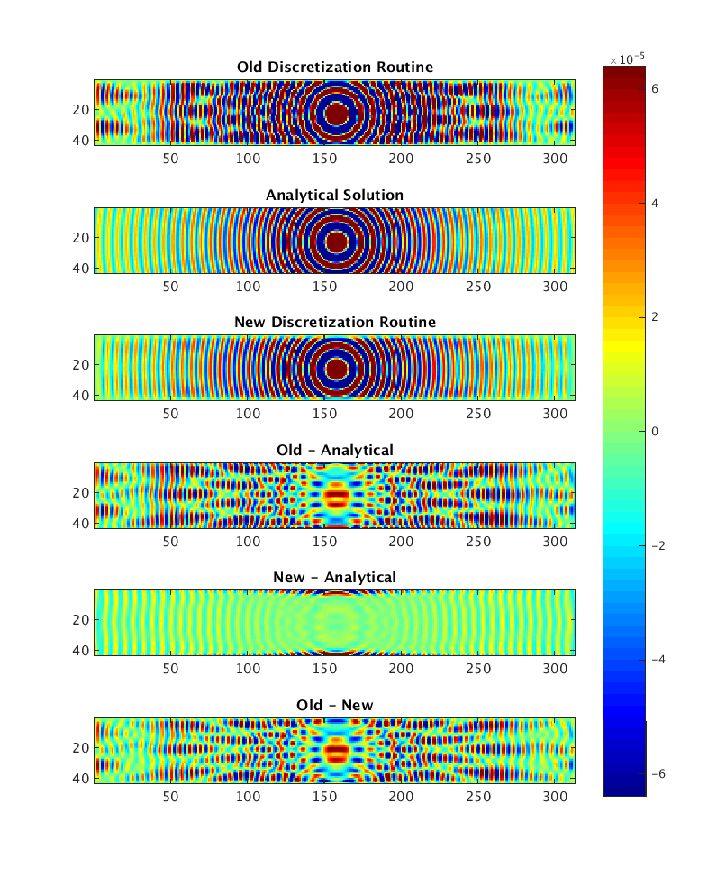
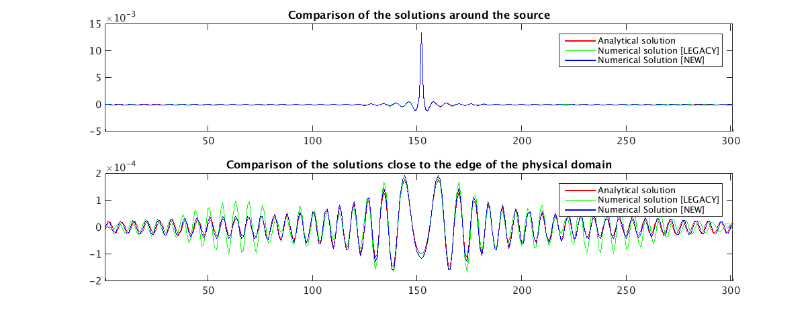
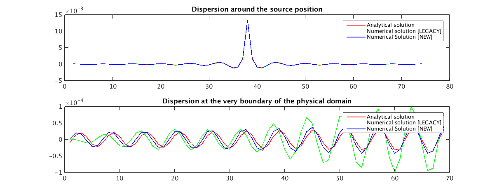

3D constant-density acoustic frequency-domain modeling: Validation
In this test we compute the analytical solution for the homogeneous 3D wave equation in frequency domain, and we compare such a solution with the numerical approximation generated by helmholtz_3d.
We also compare it with that of the legacy code, R_Helm3D. One of the main goals is to verify the dispersion error of both stencils and the efficiency of the PML boundary condition, that is, if the waves are properly absorbed in the artificial damping layer.
Author: Rafael Lago
Contents
Theory
An analytical solution exists for a Dirac source and for homogeneous velocity model. Such a solution is given by

where |x-s| is the distance between the point x and the Dirac source position s.
It is as well possible to write analytically a solution for a 3D linear velocity profile, but for the moment only the homogeneous comparison is performed.
Computational details
The analytical solution is computed exactly in the same grid as the numerical solution (including in the PML layer, but it lacks of any dumping therein).
Also, the Dirac source contains a singularity at x=s (it causes a divizion by zero). Naturally we are unable to model such a singularity properly. For this reason, after computing the numerical solutions we force the source point to zero; likewise, after computing the analytical solution we set the source position to zero.
Script
Follows the test script. Make sure to call
parpool({number_of_workers})
before calling this script to perform this test in parallel. Notice that the new code improves the performance of the old code by about 1800%.
clear flog = fopen('../results/test_validate_log','w'); np = parpool_size(); % Define the homogeneous model %-------------------------------------- model.nv = [301,31,31]; model.ov = [0 0 0]; model.dv = [25 25 25]; model.v = ones(model.nv(1),model.nv(2),model.nv(3))*4500; model.unit = 'm/s'; f = 30; % Obtain discrete operator - NEW CODE %--------------------------------------- helm = discrete_helmholtz(model,f,[],flog); Nt = prod(helm.nt); npml = helm.pml.x; % Normalize rows of the matrix - This is needed only because we will use CARPCG % to solve the linear system; Otherwise this can/should be skipped DScale1 = 1./sqrt(sum(abs(helm.coef).^2,1)); DScale1 = spdiags(DScale1',0,Nt,Nt); helm.coef = helm.coef*DScale1; % This is actually a multiplication from the LEFT! % Obtain discrete operator - LEGACY CODE %--------------------------------------- plog(flog,'* Discretizing Helmholtz operator with R_Helm3D [LEGACY] ...'); tic; [H,idx] = R_Helm3D(f,reshape(helm.pg2cg(1./(model.v(:).^2)),[Nt 1]),... ones(prod(helm.nt),1),[0 0 0],helm.d,... helm.nt,[1 1 1]*npml,100,2); T = toc; plog(flog,' done in ', T , ' seconds \n'); H = transpose(H); DScale2 = 1./sqrt(sum(abs(H).^2,1)); DScale2 = spdiags(DScale2',0,Nt,Nt); H = H*DScale2; % This is actually a multiplication from the LEFT! % Create right-hand side (point source) %--------------------------------------- x0 = zeros(Nt,1); Q = zeros(Nt,1); s_pos = ceil((helm.nt)./2) + 1; Q(sub2ind(helm.nt, s_pos(1), s_pos(2),s_pos(3))) = 1/prod(helm.d); % Distribute Everything %------------------------------------- if np > 1 plog(flog,'\n* Distributing operator over ', np, ' workers...'); x0 = distributed.zeros(helm.nt);x0 = x0(:); Qn = distributed(DScale1*Q(:)); Qo = distributed(DScale2*Q(:)); H = transpose(H); Ht = distributed(imag(H)); H = distributed(real(H)); H = H + 1i*Ht; coef = transpose(helm.coef); Ht = distributed(imag(coef)); coef = distributed(real(coef)); coef = coef + 1i*Ht; spmd, dist1 = getCodistributor(x0); dist2 = codistributor1d(1,dist1.Partition,[Nt,length(helm.idx)]); Qn = redistribute(Qn,dist1); Qo = redistribute(Qo,dist1); H = redistribute(H,dist2); coef = redistribute(coef,dist2); end helm.coef = transpose(coef); H = transpose(H); clear coef Ht; else Qn = DScale1*Q(:); Qo = DScale2*Q(:); x0 = zeros(Nt,1); end % Compute Wavefield %---------------------------------------- par.maxit = 2000; par.tol = 1e-6; par.size = helm.nt; plog(flog,'\n* [NEW] Starting Krylov solver\n\n'); if np>1 tic; snew = CARPCG(helm.coef,helm.idx,Qn,x0,par); T = toc; else tic; snew = CGMN(helm.coef,helm.idx,Qn,x0,par); T = toc; end plog(flog,'* Krylov stopped after ', T , ' seconds \n'); if np>1 ; snew = gather(snew); end % Interpolate back to physical grid snew = reshape(snew,helm.nt); plog(flog,'\n* [LEGACY] Starting Krylov solver\n\n'); if np>1 tic; sleg = CARPCG(H,idx,Qo,x0,par); T = toc; else tic; sleg = CGMN(H,idx,Qo,x0,par); T = toc; end plog(flog,'* Krylov stopped after ', T , ' seconds \n'); if np>1 ; sleg = gather(sleg); end % Interpolate back to physical grid sleg = -reshape(sleg,helm.nt); plog(flog,'* Computing analytical solution... '); tic; sanl = analytical_wavefield(helm.nt,model.v(1),helm.d(1),f,((s_pos)-1)*helm.d(1)); T = toc; plog(flog,' done in ', T , ' seconds \n');
* Physical domain: * ================== * vmin: 4.5e+03 * vmax: 4.5e+03 * Size: [7.5e+03 750 750] m³ * [ 301 31 31 ] points with grid spacing of [25 25 25] * Computational grid * ================== * n: [ 301 31 31 ] = 2.89e+05 * npml: [ 6 6 6 ], Total: 5.79e+05 * d: [ 25 25 25 ] * f: 30 Hz * nlam: 6 (effective: 6) * Discretizing Helmholtz operator with Operto et al. 27points stencil... done in 0.654 seconds * Discretizing Helmholtz operator with R_Helm3D [LEGACY] ... done in 13.2 seconds * [NEW] Starting Krylov solver * Krylov stopped after 104 seconds * [LEGACY] Starting Krylov solver * Krylov stopped after 132 seconds * Computing analytical solution... done in 1.33 seconds
Results - PML
This shows slice of the wavefields compute with both numerical routines and with the analytical solution. The difference between those is also shown.
We can clearly see that the new routine produces reflection-free wavefields confirming the quality of the absorbing boundary conditions we have implemented. We can also see that the legacy code produces some undesireable reflections.
The order of magnitude of the error (that is, the difference between the numerical and analytical solution) is as well shown, and confirms the quality of our current discretization routine. In the PML layer the difference between the analytical solution and the numerical solution is large. This expected as the analytical solution is computed without any dumping in the PML.
close all; slice_depth = 5; slice_axis = 'y'; slice_type = 'img'; cscale = norm(Q(:)); color_scale=[-cscale cscale]; sp = figure; set(sp, 'Position', [0 0 800 1000]); sp(end+1) = subplot(6,1,1); plot_slice(real(sleg), slice_depth, slice_axis, slice_type); title('Old Discretization Routine'); caxis(color_scale); axis image; sp(end+1) = subplot(6,1,2); plot_slice(real(sanl), slice_depth, slice_axis, slice_type); title('Analytical Solution'); caxis(color_scale); axis image; sp(end+1) = subplot(6,1,3); plot_slice(real(snew), slice_depth, slice_axis, slice_type); title('New Discretization Routine'); caxis(color_scale); axis image; sp(end+1) = subplot(6,1,4); plot_slice(real(sleg - sanl), slice_depth, slice_axis, slice_type); title('Old - Analytical'); caxis(color_scale); axis image; sp(end+1) = subplot(6,1,5); plot_slice(real(snew - sanl), slice_depth, slice_axis, slice_type); title('New - Analytical'); caxis(color_scale); axis image; sp(end+1) = subplot(6,1,6); plot_slice(real(sleg - snew), slice_depth, slice_axis, slice_type); title('Old - New'); caxis(color_scale); axis image; for i=2:length(sp) pos=get(sp(i), 'Position'); axes(sp(i)); set(sp(i), 'Position', [pos(1) pos(2) .6626 pos(4)]); end spcolor_bar = colorbar; set(spcolor_bar, 'Position', [.8314 .11 .0581 .8150]); caxis(color_scale); colormap jet;
Results - Amplitude and phase comparison
We display the plot of a single line taken across x direction, and superpose them with the analytical solution. The first figure shows a comparison when close to the source position, and the second figure shows a comparison close to the edge of the physical domain. Notice that the dispersion is assumed to grow farther from the source point, and therefore the second figure is more representative of the quality of the numerical solution.
As expected, the new discretization solution matches very satisfactorily the analytical solution even when close to the PML layers. The legacy discretization fails to match the analytical solution (specially in amplitude) due to excessive reflections.
sp(end+1) = figure; subplot(2,1,1); plot(real( sanl(npml+1:end-npml,s_pos(2),s_pos(3))),'r','LineWidth',1); hold on; plot(real( sleg(npml+1:end-npml,s_pos(2),s_pos(3))),'g','LineWidth',1); hold on; plot(real( snew(npml+1:end-npml,s_pos(2),s_pos(3))),'b','LineWidth',1); xlim([1 helm.n(1)]); legend('Analytical solution','Numerical solution [LEGACY]','Numerical Solution [NEW]'); title('Comparison of the solutions around the source') subplot(2,1,2); plot(real( sanl(npml+1:end-npml,npml+1,s_pos(3))),'r','LineWidth',1); hold on; plot(real( sleg(npml+1:end-npml,npml+1,s_pos(3))),'g','LineWidth',1); hold on; plot(real( snew(npml+1:end-npml,npml+1,s_pos(3))),'b','LineWidth',1); xlim([1 helm.n(1)]); legend('Analytical solution','Numerical solution [LEGACY]','Numerical Solution [NEW]'); title('Comparison of the solutions close to the edge of the physical domain') pos=get(sp(end), 'Position'); set(sp(end), 'Position', [0 0 1200 450]);
Results - Dispersion Error
We further compare the dispersion error produced by each discretization.
This is a "zoomed in" version of the previous plot. The first plot shows the waves close to the source, whereas the second plot shows the waves close to the PML. Both discretization routines produce satisfactory results close to the source, but as it approaches the PML layer the dispersion of the legacy code is shown to be significantly larger.
sp(end+1) = figure; subplot(2,1,1); plot(real( sanl(s_pos(1)-37:s_pos(1)+37,s_pos(2),s_pos(3))),'r','LineWidth',1); hold on; plot(real( sleg(s_pos(1)-37:s_pos(1)+37,s_pos(2),s_pos(3))),'g','LineWidth',1); hold on; plot(real( snew(s_pos(1)-37:s_pos(1)+37,s_pos(2),s_pos(3))),'b','LineWidth',1); legend('Analytical solution','Numerical solution [LEGACY]','Numerical Solution [NEW]'); title('Dispersion around the source position') subplot(2,1,2); plot(real( sanl(npml+1:75,npml+1,s_pos(3))),'r','LineWidth',1); hold on; plot(real( sleg(npml+1:75,npml+1,s_pos(3))),'g','LineWidth',1); hold on; plot(real( snew(npml+1:75,npml+1,s_pos(3))),'b','LineWidth',1); legend('Analytical solution','Numerical solution [LEGACY]','Numerical Solution [NEW]'); title('Dispersion at the very boundary of the physical domain') pos=get(sp(end), 'Position'); set(sp(end), 'Position', [0 0 1200 450]); fclose(flog);